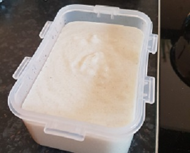
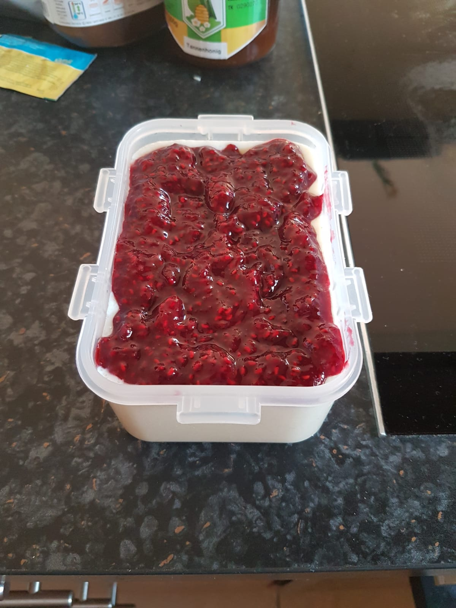

zurück
Grießbrei
Zubereitungszeit: 15min
Ergibt: 1 große Portion
Schmeckt gut mit Früchten oder
Apfelkompott

50g Grieß
500ml Milch
1EL Zucker
Grieß mit Milch und Zucker ca. 15 min auf mittlerer Hitze kochen
Dabei immer wieder umrühren
